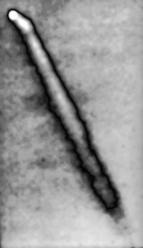
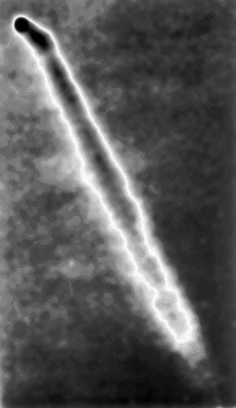
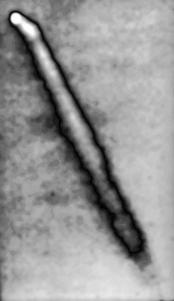
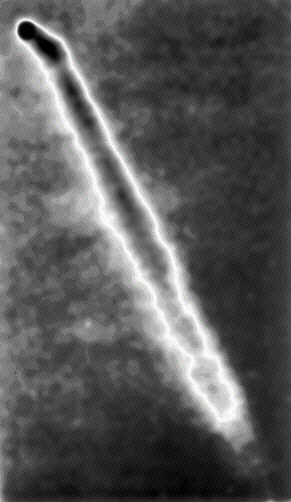

The Norwood Searchlight Incident of1949, as it has been called, is an outstanding series of 10 visual sightingsof a strange aerial object that took place in or near the Norwood, Ohioarea from August 19th of 1949 to March 10th of 1950 Photos were taken on October 23, 1949by Norwood Police Sgt.Leo Davidson, and 2 reels of 25-ft. motion picturefilm were kept in the possession of Reverend Gregory Miller, last seenat WCPO Channel 9 TV studios in 1952. Still frames from the movie film weregiven to investigator Leonard Stringfield and published in his book "SAUCERPOST 3-0 BLUE." That photo from his book was scanned and enhanced for thisreport. Using this same photo, an earlieranalysishad been made by Dr. Richard Haines. CLICK ON THE ANY IMAGE TO SEE ITS FULL SIZEVERSION Images enhanced,cropped and enlarged by Kenny Young An additional photo was found in the possession of RAY STANFORD,who states: "This is several generations down from the original16 mm moviefilm, but it seems to rather clearly show that while the beam was projectingseveral degrees away from the object, when it got within a certain eventhorizon of the object, it was simply bent or 'pulled' the beam directlyinto the object, seemingly bending it about26.5 degrees, as measured inthe photo plane! This frame has always amazed me since I first sawit in the mid-'50s. Several persons, back then, who had seen theactual movie said that at one time the object seems, indeed, to 'suck'the beam squarely into it! "I have included two versions with special filtration. The second (middle) image makes the dramatic bend of the light beam especiallyclear and easy to measure (on the top of the beam). The second (last)version seems to show what might be interpreted to be a focus effect ofthe light within the beam. Note the dark diamond shape (bright inthe original) between the object and the place where the beam bends."
|
 
{kind=link}
{kind=link}
{kind=link}